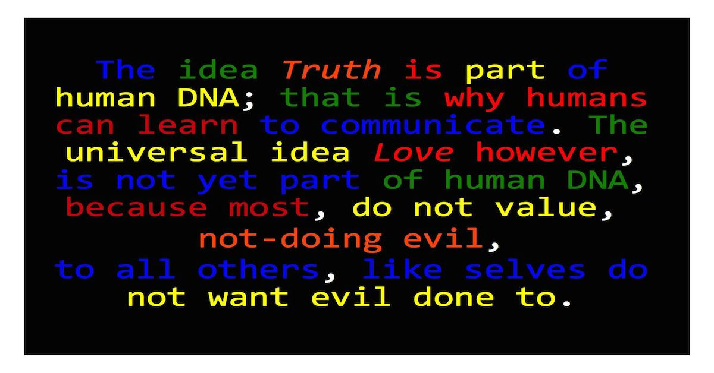

Indoctrination, Materialism, Idealism and Religion
∞ ⋈ ∞ ∞ ⋈ ∞ ∞ ⋈ ∞
First published: 12 June 2019
Did Jesus genuinely feed thousands of people with a few fish? In answering the question, the definitions of idealism and materialism are important. Idealism means "god" determines "humans'" surrounds. "All is in the mind". What "He" thinks is reality. Matter is thus determined by thin-king. Materialism is the opposite. According to materialism, "humans" are determined by their surrounds. Matter is thus dominant above thinking, when no "god" is present. In my view the reality is somewhere in between materialism and idealism. Without a doubt, thinking changes the environment when ideas are developed over time. The availability of matter and labour affects development, therefore ideas, matter, labour and duration, have influence. The extreme manifestations of idealism are however instantaneous. It is not a gradual process of development. The people were instantly fed with a few fish and different people agreed it happened. There was thus a communal mind relevant. Jesus's will and thinking became manifest as reality and different people had the recollection about many people being fed with few fish. That is if it is accepted, the writers of the gospels wrote honest reflections. Materialist philosophy, for example Marxism, excludes idealism. Marxism and Communism, therefore excluded and persecuted religious people. I recall somewhere, probably in St. John's Revelation, it was written, that at the end of time, no miracles will happen. According to history and prophecy, thus, reality is a spectrum in time, moving from idealism towards materialism. Records claim miracles happened more often historically than currently.
Why is indoctrination relevant? Indoctrination is similar to materialism. Indoctrination imprints convictions on minds. One conviction, religions promote is, only "God is" honest and idealist. The conviction is coupled with the sacrifice of the one and only honest "God". Honesty is not motivated in this conviction and the materialist effect of the indoctrination is corruption. The corrupt indoctrination can only be overcome by idealist thinking, because all the time one is reminded of the indoctrination. If one is honest, one will be sacrificed. Overcoming the indoctrination requires much time of faithful reasoning. In my view it can cause depression, if one was taugth to be honest, and one is honest. The contradiction between another expecting self to be honest and self wanting to be honest, and, indoctrination teaching, being sacrificed will be the result, is not healthy.
The above was one of the reasons i resigned from Christianity. Convincing self, the indoctrination, that honesty will cause self being sacrificed, is false, required a rejection of the Christian faith, in my case. I was actually materially disadvantaged because of honesty, at several jobs, i was dismissed from, by Christians, as a result of my honesty. Being honest, and being reminded, and being indoctrinated, all the time, that "the-honest is" sacrificed is not feasible over the long term.
Intequinism promotes a mixture of idealism and materialism, in the sense, ideas and thinking definitely change the environment, whilst ideas are being developed. Honesty cause good ideas, because honest puzzle pieces can be fit together to form new ideas, to be developed. The indoctrination thus of being sacrificed when being honest is overcome with idealism. It is however a slow idealism, not continuous trust in instantaneous idealist change, i imagine soldiers must have to survive in battle. Intequinism is against war, unless it happens to defend own territory. In Intequinism there is still belief in instantaneous change of minds, in extreme cases, because that is ultimately what belief for God implies. Some examples claim God's changes of minds happen instantaneous, just before disasters strike.
The definitions of nominalism and realism are also relevant. Nominalism means actuality is only perceived partially. Only the here and the now are perceived. Nominalism kind of means, no predictions are made, even though nominalist perception could cause the best predictive abilities. Realism means a whole view, which crosses time and place boundaries, is formed. Idealism is more in line with realism, because idealist thinking includes the future and the past. Materialism is more in line with nominalism, because it includes only what happens in the current, presently. Something like that. Intequinism is usually somewhere in between nominalism and realism. Intequinism rejects pragmatist lies, sometimes used as means to ends, in realist reasoning. It also rejects nominalism when nominalism, with empiricism, rejects the power of ideas.
It does not mean Intequinism espouses "the mean" or "middle way". Sometimes a middle exists and sometimes a middle does not exist. Middles are more relevant at concepts, because conceptual thinking, is not "grounded" in matter, where middles hardly ever exist. There is, for example, not a middle between two facts. Each fact is a nominalist objective truth. Intequinism rather opposes, than espouses, the idea "middle". New middles, when identified, must be given new names, because middles, without names, are not wanted.